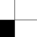

Mon Parcours
Je m'appelle Martin MOTZ et je compte de devenir développeur. Je suis passionné
d'informatique et je pratique la programmation depuis plus de 4 ans.
J'ai commencé durant mes années collèges avec mon ami Emmanuel TUDELA,
alias Akane.
(son site web)
Mes débuts consistaient à créer des pages HTML/CSS, qui aujourd'hui
seraient très laides. (il faut bien commencer quelque part :D)
J'ai petit à petit appris le JavaScript
avec l'aide de Florent Marrens.
(son site web)
Étant curieux, je me suis aussi tourné vers d'autres langages, comme le C++,
mais pour moi le JavaScript reste le numéro 1. Avec mes 4 années d'expérience
en JavaScript, je me suis orienté vers de la programmation serveur (en Node JS).
Je me suis aussi pas mal intéressé aux algorithmes en tous genres, Python
est à mon sens un excellent langage pour commencer à toucher à ça. À l'heure
d'aujourd'hui, je suis en 1ère spé Maths/Si/Nsi, 3 matières qui m'aident à
développer mes connaissances en programmation ainsi que ma logique.
Front-end
Je me qualifierai d'amateur avec le front-end, le HTML5 et le CSS3 sont eux
deux des langages assez complexes à maitriser. Pour progresser il faut pratiquer,
et c'est ce que je fais.
Back-end
Mon domaine de prédilection : le back-end. Je programme très souvent
en back-end (voir même tout le temps), uniquement en Node JS. C'est une
plateforme qui prend de l'ampleur sur le web.
Langages
 Python
Python
8/10 - Je pratique régulièrement le Python depuis la seconde, avec ce langage je touche au big data, et aux algorithmes de tri performants.
 C/C++
C/C++
9/10 - Le C et le C++ sont des langages que j'ai énormement pratiqué, avec leur gestion avancée de la mémoire, ils permettent de mieux comprendre comment nos ordinateurs fonctionnent.

 HTML5 / CSS3
HTML5 / CSS3
7/10 - Je suis pas super doué en front-end, mais j'apprends petit à petit, notamment en ayant créé ce site.
 JavaScript
JavaScript
9/10 - Le JavaScript est l'un des langage que j'ai le plus pratiqué, depuis très tôt. Je ne compte plus les projets que je créé avec.
 Node JS
Node JS
9/10 - Comme il utilise le moteur JavaScript, je suis très à l'aise avec cette plateforme. Notamment avec les websockets.
Islands Generator
Après de nombreuses versions, Islands Generator est l'un de mes meilleurs projets, j'ai bataillé pour tenter de créer moi même un système de noise (bruit), et j'ai enfin réussi.
Après de nombreuses versions, Islands Generator est l'un de mes meilleurs projets, j'ai bataillé pour tenter de créer moi même un système de noise (bruit), et j'ai enfin réussi.
Flappy Bird
C'est un classique, que ce soit en programmation ou bien en tant que jeu mobile. Les tuyaux avancent de plus en plus vite au fur et à mesure que vous progressez dans le jeu. Bonne chance !
C'est un classique, que ce soit en programmation ou bien en tant que jeu mobile. Les tuyaux avancent de plus en plus vite au fur et à mesure que vous progressez dans le jeu. Bonne chance !
Constellation
C'est un projet tout bête, mais beau visuellement. Des points sont générés aléatoirement dans le canvas, et se déplacent avec un coefficient lui aussi aléatoire. Et quand ils sont à moins de 150 pixels les uns des autres, ils se relient.
C'est un projet tout bête, mais beau visuellement. Des points sont générés aléatoirement dans le canvas, et se déplacent avec un coefficient lui aussi aléatoire. Et quand ils sont à moins de 150 pixels les uns des autres, ils se relient.

Aim Training
J'ai été inspiré par le site www.donttap.com (mais le miens est mieux :p), qui est un bon entraîneur pour l'aim (la précision). Vous avez 30 secondes pour cliquer sur le maximum de cases noires !
J'ai été inspiré par le site www.donttap.com (mais le miens est mieux :p), qui est un bon entraîneur pour l'aim (la précision). Vous avez 30 secondes pour cliquer sur le maximum de cases noires !
Crypteur de Données
Voici un magnifique crypteur de données, comme son nom l'indique. Il permet de crypter tout type de message, avec une clé en héxadécimal. Vous pouvez en générer une ou vous même la créer.
Voici un magnifique crypteur de données, comme son nom l'indique. Il permet de crypter tout type de message, avec une clé en héxadécimal. Vous pouvez en générer une ou vous même la créer.
Jump
Un petit jeu de plates-formes avec aucun objectif, juste de sauter d'obstacle en obstacle. Utilisez Q, D, et espace pour vous déplacer, amusez vous bien sur ce super jeu !
Un petit jeu de plates-formes avec aucun objectif, juste de sauter d'obstacle en obstacle. Utilisez Q, D, et espace pour vous déplacer, amusez vous bien sur ce super jeu !
 Mouse Follower
Mouse Follower
Ce petit visage mignon va suivre votre souris du regard ! J'ai essayé avec ce projet de faire de la 3D, c'est à 100% une histoire de coordonnées. Je suis plutôt content du résultat.

https://github.com/motzmartin

keidowdow#9191

@mtzm4rtin

martinmotzcontact@gmail.com